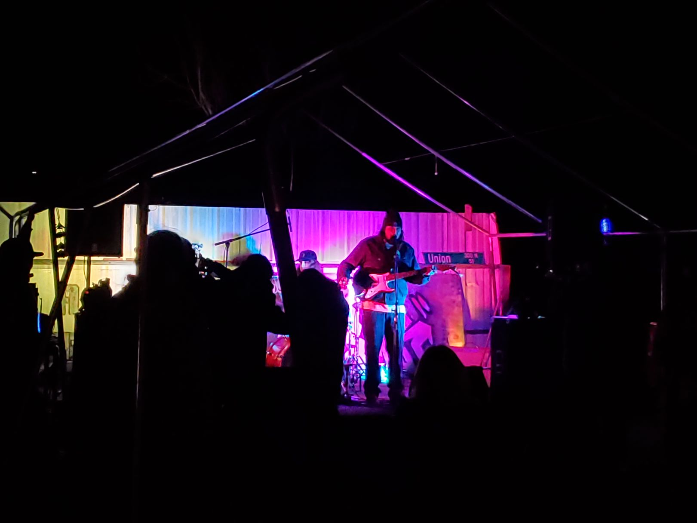

Behold the Majesty of Japanese Covers

1. Kyu Kurarin by Iyowa 2. Egorock by Surii
Song 1 is based off the story of Sayori from the video game Doki Doki Literature Club. It talks about deep topics such as depression and unrequited love with the last line "watashi chuuburarin" meaning my heart hangs in the air or perhaps a euphamism for hanging.
Song 2 is very much like Surii's other songs in theme. The theme being not being able to fit in. A misfit who refuses to conform and has a hard time expressing himself in a harsh world that banishes those that are different.
Prepare your soul for the enchanting melodies of the Far East.
iyowa - kyu kurarin (Cover)
surii - egorock (Cover)
Delve into the Depths of Original Compositions

Witness the birth of musical genius!
Dark River
Dozol
Explore Local Bands in San Joaquin County
Here are some photos that I have taken of local bands in San Joaquin county.
